Week 6 (study week): Cleaning and plotting time series data
This is an optional tutorial for anyone working with data collected over time: repeated surveys, data loggers, weather records or growth measurements.
Note
This tutorial is optional and not assessed, and it will not be in the exam. Work through it in your own time if time series are relevant to your project.
You will learn how to:
Convert text into dates and times with lubridate, and extract useful parts (year, month, day of year).
Plot long-term survey data and spot sudden changes.
Explore seasonality, trends and autocorrelation.
Highlight a study period on logger data.
Fit a simple growth curve.
Most examples use datasets from the lterdatasampler package.
Code
# Week 6 workshop (optional) - Time series# Written by Nicholas Wu, 1234578, 01/04/2027# install.packages("lterdatasampler") # run once in the console if neededlibrary(tidyverse) # includes lubridate for dates and timeslibrary(lterdatasampler) # example ecological datasetslibrary(patchwork) # combine plots# setwd("C:/Users/YOUR-NAME/Documents/ECS200")
Dates and times with lubridate
When you import a CSV file, dates are often read as text (chr). R needs to know they are dates before it can sort, plot or subtract them. The lubridate functions are named after the order of the parts in your dates: ymd() for year-month-day, dmy() for day-month-year, mdy() for month-day-year, with _hm or _hms added when there is a time.
Code
lubridate::dmy("05-01-1987") # day-month-year
[1] "1987-01-05"
Code
lubridate::mdy("01/05/1987") # month-day-year
[1] "1987-01-05"
Code
lubridate::ymd_hms("1987-01-05 14:30:00") # date and time
[1] "1987-01-05 14:30:00 UTC"
Which lubridate function to use, depending on how the dates were written.
Once a column is a date, you can extract useful parts from it:
Code
stream_dates <- lterdatasampler::luq_streamchem %>% dplyr::select(sample_date, temp) %>% dplyr::mutate(year = lubridate::year(sample_date), # yearmonth = lubridate::month(sample_date), # month as a numbermonth_lab = lubridate::month(sample_date, label =TRUE), # month as a label (Jan, Feb...)doy = lubridate::yday(sample_date)) # day of the year (1-366)head(stream_dates)
# A tibble: 6 × 6
sample_date temp year month month_lab doy
<date> <dbl> <dbl> <dbl> <ord> <dbl>
1 1987-01-05 20 1987 1 Jan 5
2 1987-01-13 20 1987 1 Jan 13
3 1987-01-20 20 1987 1 Jan 20
4 1987-01-27 20 1987 1 Jan 27
5 1987-02-03 20 1987 2 Feb 34
6 1987-02-10 20 1987 2 Feb 41
Ecological time series are often sampled unevenly. The gap between consecutive samples, calculated with dplyr::lag(), shows missing sampling periods or changes in effort.
Code
stream_dates %>% dplyr::arrange(sample_date) %>% dplyr::mutate(days_since_last =as.numeric(sample_date - dplyr::lag(sample_date))) %>% dplyr::count(days_since_last, sort =TRUE) %>%# how often each gap occurshead()
The luq_streamchem data contain stream chemistry from the Quebrada Sonadora, a high-elevation stream in the Luquillo Experimental Forest, Puerto Rico. The forest supplies water to about 20% of Puerto Rico’s population and is a refuge for Caribbean biodiversity.
Credit: Luquillo LTER. CC BY-SA 4.0.
Plot one chemical, potassium (k, mg/L), over time:
Code
ggplot2::ggplot(lterdatasampler::luq_streamchem, ggplot2::aes(x = sample_date, y = k)) + ggplot2::geom_line(colour ="#e12744") + ggplot2::labs(x =NULL, y ="Potassium (mg/L)") + ggplot2::theme_bw()
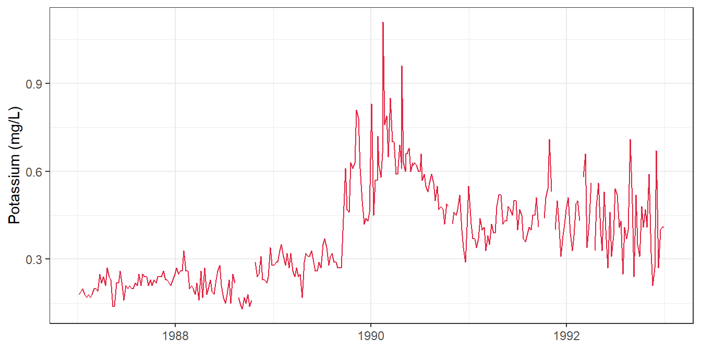
Something happened at the end of 1989! Are the other chemicals affected too? Convert the data to long format so facet_wrap() can draw one panel per variable. scales = "free_y" gives each panel its own y-axis, because the units differ.
Code
stream_long <- lterdatasampler::luq_streamchem %>% tidyr::pivot_longer(cols =-c(sample_id, sample_date), # every column except these twonames_to ="variable",values_to ="value")ggplot2::ggplot(stream_long, ggplot2::aes(x = sample_date, y = value)) + ggplot2::geom_line(colour ="#e12744") + ggplot2::facet_wrap(~ variable, scales ="free_y") + ggplot2::labs(x =NULL, y =NULL) + ggplot2::theme_bw()
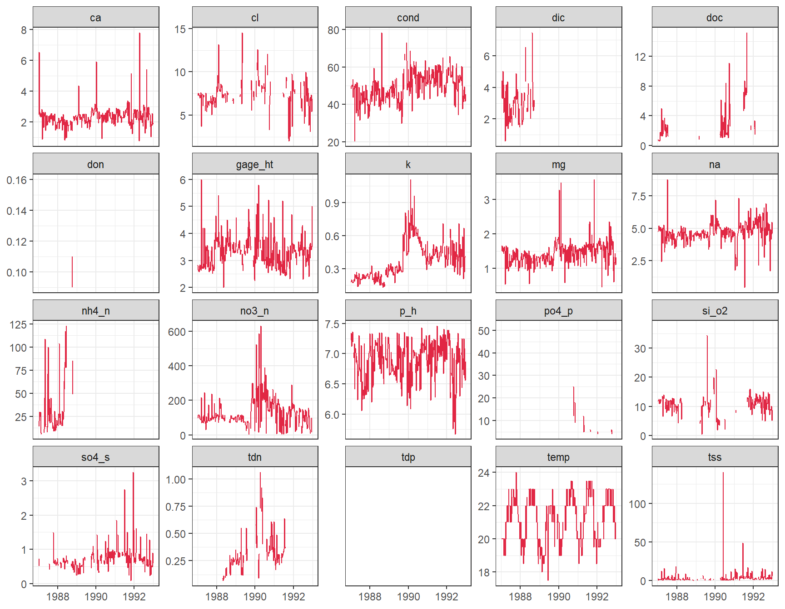
Several variables jump at the end of 1989. Hurricane Hugo hit Puerto Rico in September 1989, and in the following year stream exports of potassium, nitrate and ammonium increased by 119%, 182% and 102%. A dashed line marks the date of landfall:
Packages such as changepoint can detect change points like this statistically.
The arc_weather data contain daily weather records from Toolik Field Station, Alaska (1988–2018).
LTER research station at Toolik Lake. LTER CC BY-SA 4.0.
First calculate the monthly mean air temperature:
Code
arc_monthly <- lterdatasampler::arc_weather %>% dplyr::mutate(year = lubridate::year(date),month = lubridate::month(date)) %>% dplyr::group_by(year, month) %>% dplyr::summarise(mean_temp =mean(mean_airtemp, na.rm =TRUE), .groups ="drop") %>% dplyr::mutate(year_month = lubridate::make_date(year, month, 1)) # first day of each month, for plottingggplot2::ggplot(arc_monthly, ggplot2::aes(x = year_month, y = mean_temp)) + ggplot2::geom_line() + ggplot2::labs(x =NULL, y ="Mean monthly air temperature (°C)") + ggplot2::theme_bw()
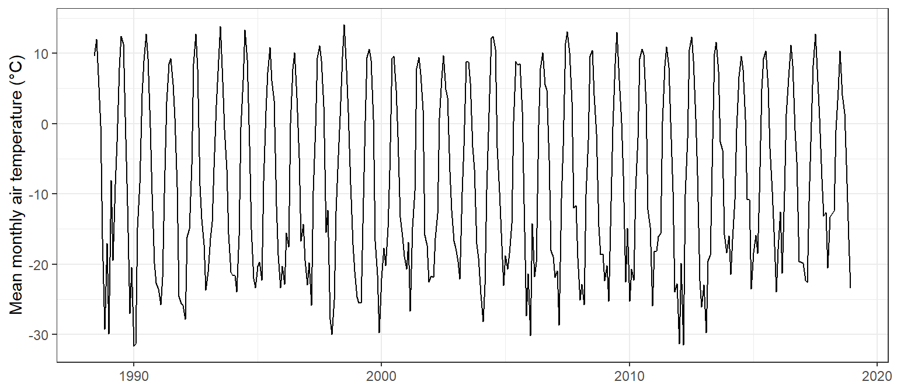
A seasonal plot puts month on the x-axis and draws one line per year, which makes the seasonal cycle and any odd years easy to see:
Code
ggplot2::ggplot(arc_monthly, ggplot2::aes(x = month, y = mean_temp, group = year, colour = year)) + ggplot2::geom_line(alpha =0.7) + ggplot2::scale_x_continuous(breaks =1:12, labels = month.abb) +# month.abb = Jan, Feb, ... ggplot2::scale_colour_viridis_c() + ggplot2::labs(x =NULL, y ="Mean monthly air temperature (°C)", colour ="Year") + ggplot2::theme_bw()
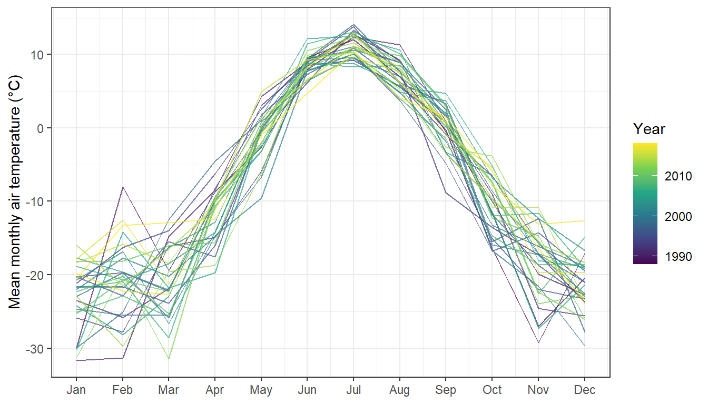
Decomposition splits a time series into a long-term trend, a repeating seasonal cycle and the remainder (what is left over). Base R’s stl() does this with a ts (time series) object:
Code
# A ts object needs evenly spaced values, the start date and the number of# observations per cycle (12 months per year)arc_ts <-ts(arc_monthly$mean_temp, start =c(1988, 6), frequency =12)arc_stl <-stl(arc_ts, s.window ="periodic")plot(arc_stl)
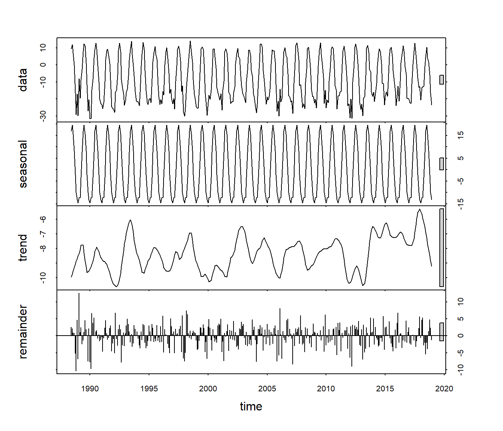
data: the raw monthly means.
seasonal: the repeating yearly cycle, which is very strong here.
trend: the long-term change after removing the seasonal cycle. This is the part that matters for questions about climate change.
remainder: variation that is not explained by the trend or the season.
Autocorrelation measures how similar a time series is to itself a certain number of steps (lags) earlier. acf() plots the autocorrelation at each lag:
Code
acf(arc_ts, lag.max =36, main ="Monthly air temperature")
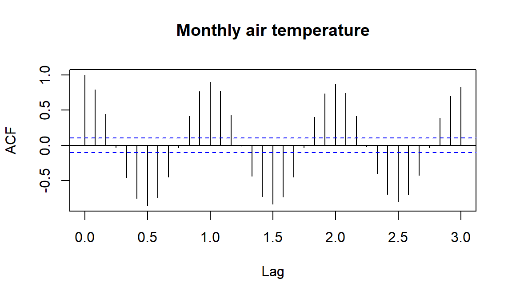
The strong wave pattern repeats every 12 months, as expected for a seasonal series: months six months apart are negatively correlated (summer vs winter). Common ACF patterns:
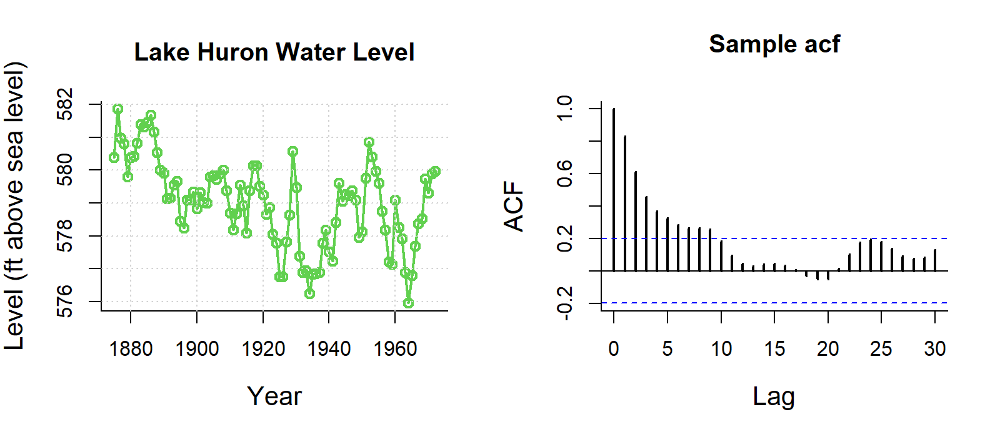
Trend: slowly decreasing autocorrelation.
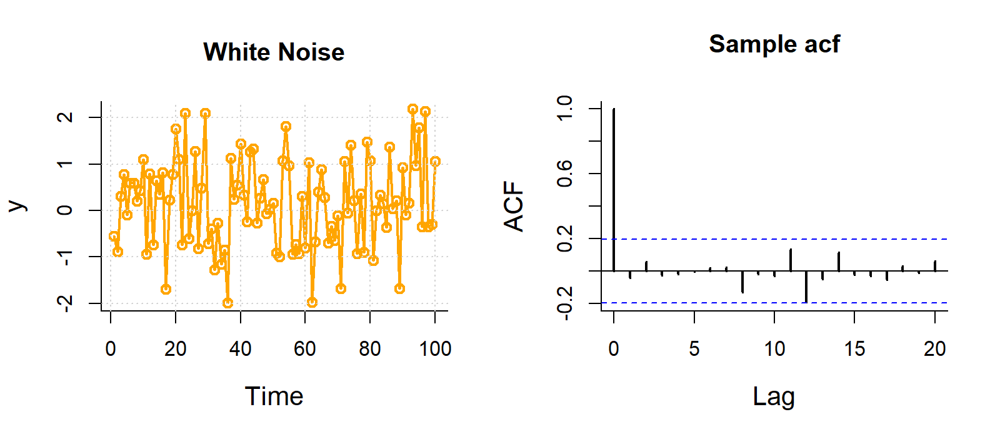
Random noise: no pattern, all spikes inside the blue lines.
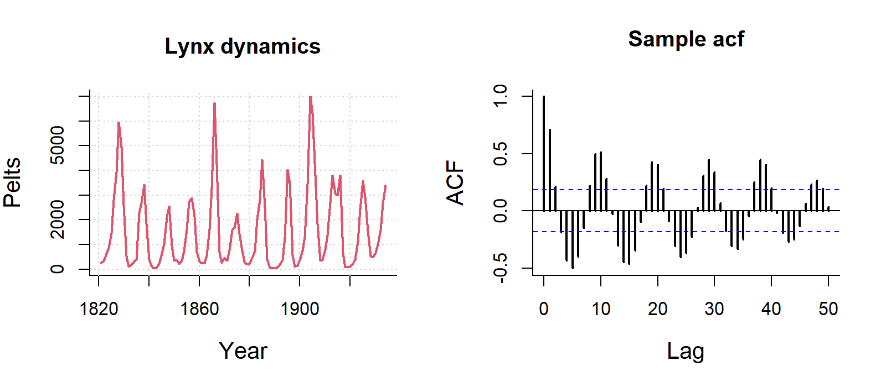
Seasonal: a repeating wave.
Strong autocorrelation violates the independence assumption of the models in Weeks 5–11. Estimates are still unbiased, but standard errors are too small, so p-values are too optimistic. Time series models (e.g. ARIMA) or models with an autocorrelation structure handle this.
Data loggers record temperature or humidity every few minutes for months. You may only use part of the record, but it is useful to show the whole period and highlight when you sampled.
winter_clim_dat.csv contains air temperature and relative humidity recorded every 90 minutes outside (EXT) and deep inside (DEEP) two caves (MAM and YES) used by roosting bats. Here, dates and times are written as day/month/year hour:minute, so we use lubridate::dmy_hm().
Surveying cave-roosting bats and cave microclimate. Photo: C. Turbill.
clim_data <- readr::read_csv("data/winter_clim_dat.csv") %>% dplyr::mutate(date_time = lubridate::dmy_hm(date_time), # text to date-timelocation =factor(location, levels =c("EXT", "DEEP"))) # outside first# Survey period (as date-times, to match the x-axis)survey_start <- lubridate::ymd_hm("2023-07-10 00:00")survey_end <- lubridate::ymd_hm("2023-08-12 00:00")temp_plot <- ggplot2::ggplot(clim_data, ggplot2::aes(x = date_time, y = air_temp, colour = location)) + ggplot2::geom_line() + ggplot2::geom_vline(xintercept =c(survey_start, survey_end), linetype ="dashed") + ggplot2::scale_colour_manual(values =c("EXT"="#F5C4B8", "DEEP"="#e12744")) + ggplot2::labs(x =NULL, y ="Air temperature (°C)", colour ="Location") + ggplot2::facet_wrap(~ site) + ggplot2::theme_bw()rh_plot <- ggplot2::ggplot(clim_data, ggplot2::aes(x = date_time, y = RH, colour = location)) + ggplot2::geom_line() + ggplot2::geom_vline(xintercept =c(survey_start, survey_end), linetype ="dashed") + ggplot2::scale_colour_manual(values =c("EXT"="#B8CEF5", "DEEP"="darkblue")) + ggplot2::labs(x =NULL, y ="Relative humidity (%)", colour ="Location") + ggplot2::facet_wrap(~ site) + ggplot2::theme_bw()temp_plot / rh_plot # patchwork: stack the two plots
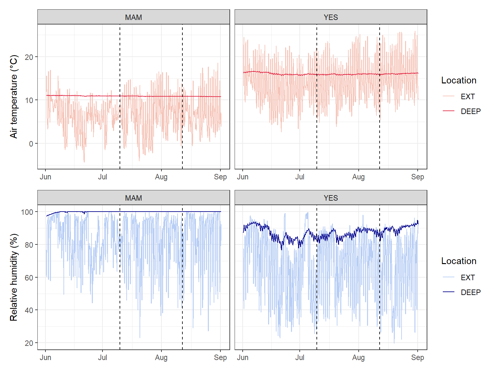
The knz_bison data contain the age and weight of bison at Konza Prairie, Kansas, weighed at an annual round-up since 1994, the longest continuous record of wild ungulate weight gain in the world.
Growth is not a straight line: it is fast at first and levels off at an adult size. A common model for this is the Gompertz curve (as used by Martin and Barboza, 2020 for these bison):
where \(b_1\) is the asymptotic (adult) mass, \(b_2\) the growth rate at the inflection point and \(b_3\) the age at the inflection point. nls() (non-linear least squares) estimates the three parameters from starting guesses.
Code
# Female bison onlybison_f <- bison_data %>% dplyr::filter(animal_sex =="F")# Fit the Gompertz model. The start values are rough guesses from the plot.bison_gompertz <-nls(animal_weight ~ b1 *exp(-exp(-b2 * (animal_age - b3))),data = bison_f,start =list(b1 =1000, b2 =1, b3 =0.6))summary(bison_gompertz)
Formula: animal_weight ~ b1 * exp(-exp(-b2 * (animal_age - b3)))
Parameters:
Estimate Std. Error t value Pr(>|t|)
b1 1.010e+03 1.903e+00 530.58 <2e-16 ***
b2 7.276e-01 7.550e-03 96.38 <2e-16 ***
b3 2.833e-01 8.064e-03 35.13 <2e-16 ***
---
Signif. codes: 0 '***' 0.001 '**' 0.01 '*' 0.05 '.' 0.1 ' ' 1
Residual standard error: 81.12 on 5046 degrees of freedom
Number of iterations to convergence: 4
Achieved convergence tolerance: 3.097e-06
(236 observations deleted due to missingness)
Code
# Predicted weights for ages 0 to 22, for plotting the curvebison_pred <-data.frame(animal_age =seq(0, 22, by =0.1))bison_pred$animal_weight <-predict(bison_gompertz, newdata = bison_pred)ggplot2::ggplot(bison_f, ggplot2::aes(x = animal_age, y = animal_weight)) + ggplot2::geom_jitter(size =0.5, alpha =0.2, width =0.2, height =0) + ggplot2::geom_line(data = bison_pred, colour ="#e12744", linewidth =1) + ggplot2::labs(x ="Age (years)", y ="Weight (pounds)") + ggplot2::theme_bw()
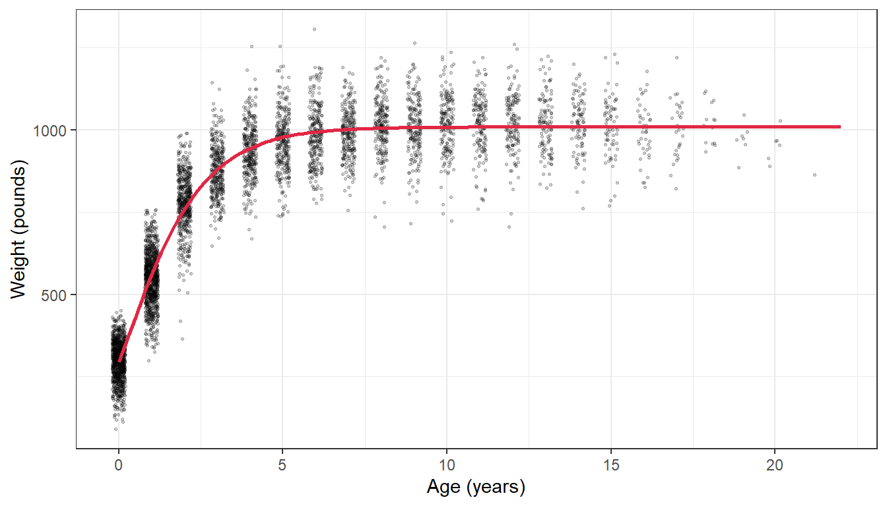
Bad time series data
Loggers can be damaged, exposed to direct sun, flooded or affected by software bugs. In this example something went wrong after 1 November:
Time series with bad data after 1 November.
These data need to be removed before analysis. Depending on the problem, you can:
filter out values beyond a biologically or physically possible threshold (e.g. humidity above 100%);
filter out outliers with the IQR rule (Week 1);
filter out the time period when you know the equipment was faulty (e.g. after a storm), using dplyr::filter(date_time < lubridate::ymd("2023-11-01")).
A worked example: cleaning a raw logger file
Other common problems with microclimate loggers are outliers, duplicate times/values and missing data points. logger_bad.csv is a (simulated) week of hourly air temperature from a logger placed in a tree hollow. It contains all of these problems, just like a real file straight off a logger.
logger_raw <- readr::read_csv("data/logger_bad.csv") %>% dplyr::mutate(date_time = lubridate::dmy_hm(date_time)) # text to date-timesummary(logger_raw)
date_time air_temp
Min. :2023-07-10 00:00:00 Min. : 4.900
1st Qu.:2023-07-11 17:15:00 1st Qu.: 7.475
Median :2023-07-13 04:30:00 Median :11.650
Mean :2023-07-13 09:56:23 Mean :11.877
3rd Qu.:2023-07-15 05:45:00 3rd Qu.:15.825
Max. :2023-07-16 23:00:00 Max. :47.300
NAs :2
Code
# Always plot the raw data firstggplot2::ggplot(logger_raw, ggplot2::aes(x = date_time, y = air_temp)) + ggplot2::geom_line() + ggplot2::geom_point(size =0.8) + ggplot2::labs(x =NULL, y ="Air temperature (°C)") + ggplot2::theme_bw()
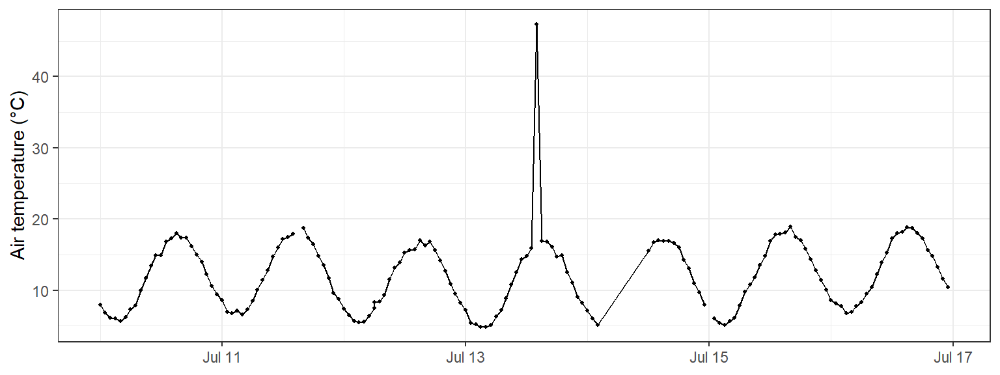
The plot already shows a spike to over 45 °C and a gap where the line jumps across missing hours. The other problems are hidden, so we check for each one.
Duplicates in logger files usually happen when the logger is downloaded twice and the files are joined (the same rows twice), or when the logger records two readings at the same time.
Exact duplicate rows are found and removed exactly as in Week 1 (section 1.3), with duplicated() and dplyr::distinct():
Code
sum(duplicated(logger_raw)) # number of rows that are exact copies
[1] 6
Code
logger_clean <- logger_raw %>% dplyr::distinct() # keep one copy of each row
Duplicate times with different values are specific to time series. The rows are not identical, so dplyr::distinct() does not catch them, but a logger can only have one reading per time. Count the readings at each time:
Code
# Times that have more than one readinglogger_clean %>% dplyr::count(date_time) %>% dplyr::filter(n >1)
# A tibble: 1 × 2
date_time n
<dttm> <int>
1 2023-07-12 06:00:00 2
Code
# Look at the readings at that timelogger_clean %>% dplyr::filter(date_time == lubridate::ymd_hm("2023-07-12 06:00"))
Decide which reading to keep. If you cannot tell which one is right, take the mean of the readings at that time:
Code
logger_clean <- logger_clean %>% dplyr::group_by(date_time) %>% dplyr::summarise(air_temp =mean(air_temp), .groups ="drop") # one row per time# Check: should now return no rowslogger_clean %>% dplyr::count(date_time) %>% dplyr::filter(n >1)
# A tibble: 0 × 2
# ℹ 2 variables: date_time <dttm>, n <int>
The IQR rule from Week 1 looks at all values together. In a time series, a value can be within the normal range for the whole week but still be impossible for that time (e.g. 20 °C at 3 am on a night when it was 8 °C an hour earlier). Two time-series checks work better:
a physical limit: values outside what is possible at the site;
a rate of change: air temperature cannot jump by more than a few degrees in one hour, so compare each reading to the one before it with dplyr::lag().
Code
logger_clean <- logger_clean %>% dplyr::mutate(change = air_temp - dplyr::lag(air_temp)) # change since the last reading (°C)# Readings above 40 °C, or that jumped more than 5 °C in an hourlogger_clean %>% dplyr::filter(air_temp >40|abs(change) >5)
The spike at 14:00 on 13 July rose by over 30 °C in one hour, then dropped back again (the row after it shows the matching drop). The sun probably hit the sensor. The third row (12:00 on 14 July) is a false alarm: its “change” is large only because the previous reading was 10 hours earlier (the missing data in tab 3), so it is a real value. Always look at flagged rows before removing them.
Replace the bad value with NA rather than deleting the row, so the time series stays complete:
Choose the limits from what you know about the site and the sensor, and report them in your methods (e.g. “readings that changed by more than 5 °C within an hour were removed”). Do not remove values just because they are extreme: a real heatwave is data, not an error.
Time series can be missing data in two ways:
Blank readings (NA) in a row that exists. Count them with colSums(is.na()) as in Week 1 (section 1.2).
Missing rows: the logger recorded nothing at all, e.g. when the battery failed. These are invisible to is.na() because the rows do not exist! Find them by looking at the gap between readings, as at the top of this page.
Code
colSums(is.na(logger_clean)) # blank readings (includes the spike we removed)
date_time air_temp
0 3
Code
# Gaps longer than the 1-hour logging intervallogger_clean %>% dplyr::mutate(gap_hours =as.numeric(difftime(date_time, dplyr::lag(date_time), units ="hours"))) %>% dplyr::filter(gap_hours >1)
There is a 10-hour gap: 9 hourly readings are missing. tidyr::complete() adds a row, filled with NA, for every expected time, so the gaps become visible:
Code
logger_clean <- logger_clean %>% tidyr::complete(date_time =seq(min(date_time), max(date_time), by ="1 hour"))nrow(logger_clean) # 7 days x 24 hours = 168
[1] 168
Code
colSums(is.na(logger_clean)) # missing rows now show up as NA
date_time air_temp
0 12
What to do with the NAs depends on how long the gap is:
Short gaps (one or two readings) can be filled by linear interpolation: a straight line between the readings on either side. Base R’s approx() does this.
Long gaps should usually be left as NA. Interpolating across 9 hours would draw a straight line through a whole night and invent data that were never measured.
Code
# Label each run of consecutive NAs with its lengthlogger_clean <- logger_clean %>% dplyr::mutate(run_id =cumsum(!is.na(air_temp))) %>%# same id for an NA run dplyr::group_by(run_id) %>% dplyr::mutate(gap_length =sum(is.na(air_temp))) %>%# length of that NA run dplyr::ungroup() %>% dplyr::mutate(# straight-line estimate between the neighbouring readingsinterp =approx(x = date_time, y = air_temp, xout = date_time)$y,# only use it for gaps of 2 readings or fewerair_temp_filled = dplyr::if_else(is.na(air_temp) & gap_length <=2, interp, air_temp),filled =is.na(air_temp) &!is.na(air_temp_filled) # flag filled values ) %>% dplyr::select(date_time, air_temp, air_temp_filled, filled)sum(logger_clean$filled) # how many values were filled
[1] 3
Compare raw and cleaned data
Finally, compare the raw and cleaned data. Filled values are shown in red, and the long gap is left empty:
Code
raw_plot <- ggplot2::ggplot(logger_raw, ggplot2::aes(x = date_time, y = air_temp)) + ggplot2::geom_line(colour ="grey50") + ggplot2::labs(x =NULL, y ="Air temp (°C)", title ="Raw") + ggplot2::theme_bw()clean_plot <- ggplot2::ggplot(logger_clean, ggplot2::aes(x = date_time, y = air_temp_filled)) + ggplot2::geom_line() +# breaks where values are NA ggplot2::geom_point(data = dplyr::filter(logger_clean, filled),colour ="#e12744", size =2) +# interpolated values ggplot2::labs(x =NULL, y ="Air temp (°C)", title ="Cleaned") + ggplot2::theme_bw()raw_plot / clean_plot
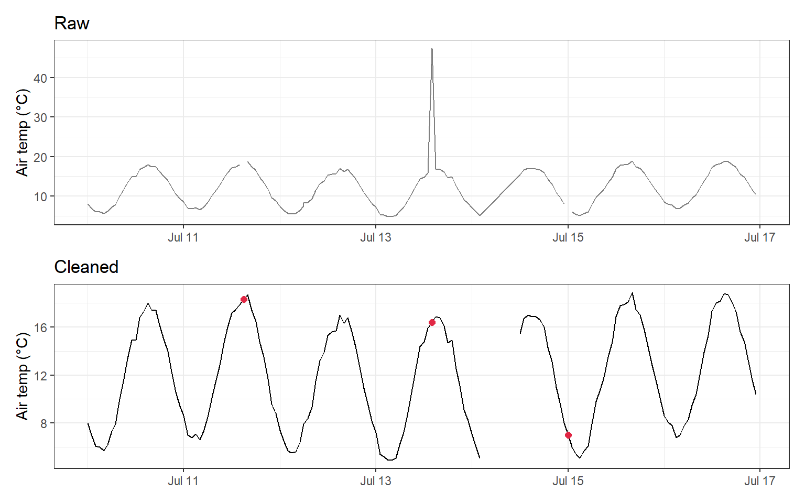
TipChecklist for raw logger data
Convert the date-time column with lubridate and plot the raw data.
Find times with more than one reading (dplyr::count(date_time)) and keep one.
Flag impossible values and sudden jumps (dplyr::lag()) and set them to NA.
Add missing times with tidyr::complete().
Interpolate only short gaps; leave long gaps as NA.
Report every cleaning step in your methods, and keep the raw file unchanged.
Analysing time series
Time series analysis is beyond this unit, but here are some possibilities:
Repeated measures: if the same individuals or sites are measured over time, include them as a random effect (Week 12).
Trends and population dynamics: GLMs (Week 8), or generalised additive models (GAMs) for non-linear trends over time (Pedersen et al., 2019).
Forecasting: models such as autoregressive (AR), ARIMA and exponential smoothing handle autocorrelation and seasonality and can predict future values. See this live forecast of desert rodent populations.
Captures of Merriam’s kangaroo rat (Dipodomys merriami) over time.